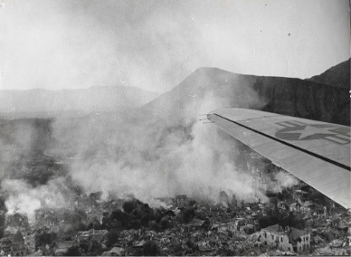
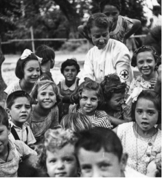

Αρκετές χώρες ήρθαν σε βοήθεια της Κεφαλονιάς μετά τους καταστροφικούς σεισμούς. Η περισσότερη βοήθεια προήλθε από το Ηνωμένο Βασίλειο, τις Ηνωμένες Πολιτείες, τη Σουηδία και τη Νορβηγία. Μεγάλο μέρος της βοήθειας ήρθε με τη μορφή ανθρώπινου δυναμικού - πολλές διεθνείς ομάδες βοήθησαν τους Κεφαλλονίτες να ξαναχτίσουν τα σπίτια τους και άλλα κτίρια στις πόλεις τους. Άλλες ενισχύσεις περιελάμβαναν την αεροναπίδα τροφίμων και νερού σε ανθρώπους σε όλο το νησί. Υπάρχουν δρόμοι και πλατείες σε όλη την Κεφαλονιά που πήραν το όνομά τους από τους ανθρώπους και τα μέρη που βοήθησαν το νησί να ανακάμψει.
Aid
1963
Ιστορία
Timeline
Βοήθεια
Several countries came to Kefalonia’s aid in the aftermath of the destructive earthquakes. The most help came from the United Kingdom, the United States, Sweden, and Norway. Much of the assistance came in the form of manpower—many international groups assisted Kefalonians to rebuild their homes and other buildings in their towns. Other aid included airdropping food and water to people throughout the island. There are roads and squares throughout Kefalonia named after the people and places that helped the island recover.
[1] Η Διεθνής Επιτροπή Ερυθρού Σταυρού οργάνωσε ενα κέντρο φροντίδας για τα παιδιά που είχαν πληγεί απο το σεισμό. Ζάκυνθος 1953. The ICRC set up a daycare center for children that were impacted by the earthquake. Zakynthos 1953.
[2] Άποψη της καταστροφής από αμερικανικό αεροπλάνο που παρέχει βοήθεια. View of the destruction from an US plane providing aid.


[1] STUNNING 3D VIRTUAL PHOTO EXHIBITION ABOUT RED CROSS RED CRESCENT HISTORY IN GREECE ready2board : Blue Issue, August 2020 - October 2020 [2] https://upload.wikimedia.org/wikipedia/commons/thumb/1/1c/KefaloniaAerealWe.jpg/1200px-KefaloniaAerealWe.jpg